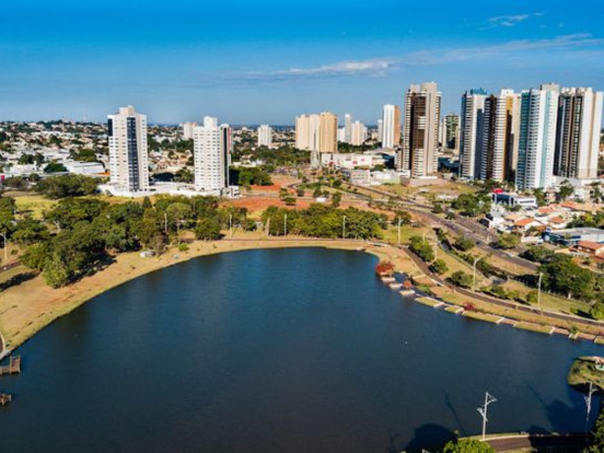

O Mato Grosso do Sul, localizado no Centro-Oeste brasileiro, destaca-se pela força do agronegócio e por abrigar tesouros ecológicos mundiais. Criado em 1977, o estado tem Campo Grande como capital e é mundialmente famoso pelo ecoturismo em Bonito e pela biodiversidade do Pantanal. Sua economia é um polo nacional de produção de grãos, carne e celulose.
